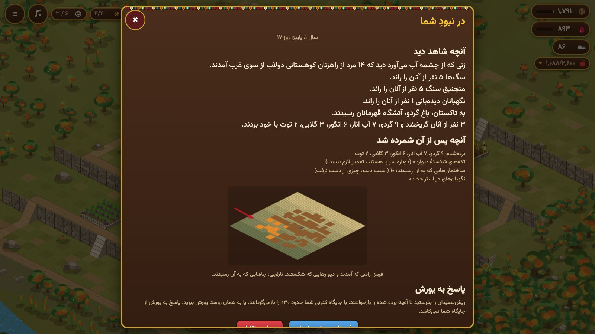
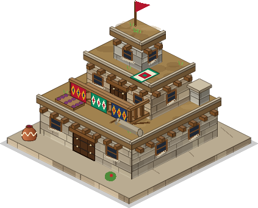

از اینجا شروع کنید

روستایی پلکانی در کوهستان هورامان بسازید و خانوادهتان را از زمستان بگذرانید.
همین حالا بازی کنید راهنمای بازیراهتان را پیدا کنید
 راهنمای بازیهمهٔ بازی، گام به گام، با تصویر.
راهنمای بازیهمهٔ بازی، گام به گام، با تصویر.
بازی آنلاینهمسایههای واقعی، رونوشتی امن از روستا، دستگاهی دیگر. ایلها و امتیازکنار هم بایستید، یاری کنید و خود را بسنجید.
ایلها و امتیازکنار هم بایستید، یاری کنید و خود را بسنجید.
ساختمانهاهر ساختمان، سطح و بها. اهل خانهخانوادهٔ شما: کار، کلاش و نگهبانی.
اهل خانهخانوادهٔ شما: کار، کلاش و نگهبانی. نگهبانان، یاران و قهرماناننگهبانان، یاران اجیر و دو قهرمان.
نگهبانان، یاران و قهرماناننگهبانان، یاران اجیر و دو قهرمان. کالا و خوراکآنچه انبار میکنید و آنچه خانواده را سیر میکند.
کالا و خوراکآنچه انبار میکنید و آنچه خانواده را سیر میکند. دام و طیورمرغ، بز، گاو و نیازهای زمستانشان.
دام و طیورمرغ، بز، گاو و نیازهای زمستانشان. فصلها و سالفصلها، زمستانهای سخت و برداشت.
فصلها و سالفصلها، زمستانهای سخت و برداشت. بازار و کلاشداد و ستد میوه، و آنچه کلاش میتواند.
بازار و کلاشداد و ستد میوه، و آنچه کلاش میتواند. یورش و دفاعیورش به شما، دفتر شاهدان، دیوارها و حیوانات وحشی.
یورش و دفاعیورش به شما، دفتر شاهدان، دیوارها و حیوانات وحشی.تواریخ هورامان یک بازی بقای روستایی است در روستاهای پلکانیِ سنگیِ هورامان، در کوههای زاگرس. پلهها و خانهها را میسازید، خانوادهای را بزرگ میکنید، دام نگه میدارید و انبارها را پر میکنید تا خانوادهتان از هر زمستان بگذرد.
نخستین روزها
- برداشت کنید. ساختمانی را که محصولش آماده است بزنید (باغ گردو، آبانارگیر) تا برداشت شود. گردو هزینهٔ ساخت را میدهد؛ آب انار هزینهٔ یادگرفتن مهارت و اجیر کردن یاران را.
- بسازید و ارتقا دهید. فروشگاه را باز کنید. کلبهٔ بنّا شما تعیین میکند چند ساختمان همزمان ساخته شود. دیوانخانه، خانهٔ بزرگ، تعیین میکند چه چیزی و چند تا از هر کدام میتوانید بسازید.
- به سال نگاه کنید. پنل سال را باز کنید. هر فصل یک روز واقعی طول میکشد و ۳۰ روز بازی دارد. زمستان آزمون اصلی است: برف گردنه را میبندد و خانواده با آنچه انبار کرده زندگی میکند.
- پیش از زمستان انبارها را پر کنید. پنل انبار نشان میدهد چند روز خوراک، علوفه و هیزم دارید. لبنیاتخانه، آشپزخانه، خشک کردن میوه روی بام و کشتار پاییزی، محصول سال را به خوراک زمستان تبدیل میکنند.
- مراقب خانواده باشید. در پنل اهل خانه هر نفر کار میکند، کلاش میسازد یا نگهبانی میدهد. نگهبانان از دام و روستا محافظت میکنند، ولی کار نمیکنند.
کجا بازی کنیم
در هر مرورگر وب، روی رایانه، تبلت یا تلفن: https://hawraman-api-production.up.railway.app/. نیازی به نصب نیست. روستای شما در همان مرورگر ذخیره میشود.
بعد چه بخوانید
- راهنمای بازی: همهٔ بازی گام به گام، از نخستین لمس تا نخستین زمستان.
- بازی آنلاین و ایلها و امتیاز: یورش میان بازیکنان، بردن روستا به دستگاهی دیگر، ایل و یاری به یکدیگر.
- فصلها و سال: آنچه در طول سال تغییر میکند، زمستانهای سخت و جلو بردن زمان.
- کالا و خوراک: همهٔ آنچه میتوانید انبار کنید و اینکه هر کدام چقدر خانواده را سیر میکند.
- ساختمانها: همهٔ ساختمانها، سطحها و هزینههایشان.
- بازار و کلاش: داد و ستد، و آنچه کلاشِ گرانبها میتواند بکند.